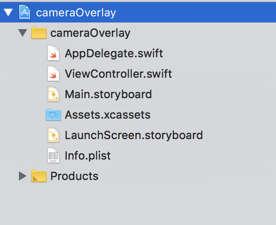
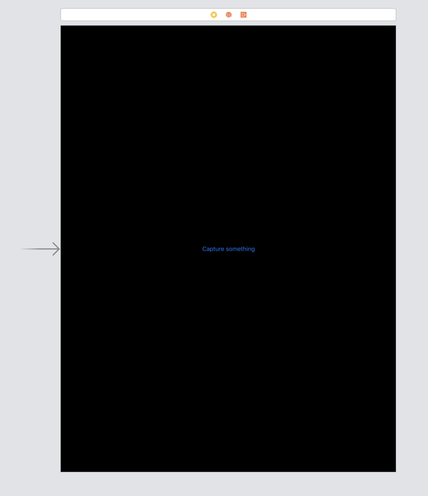
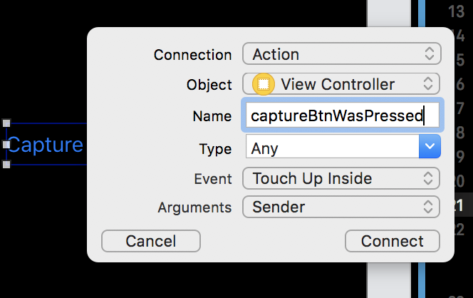
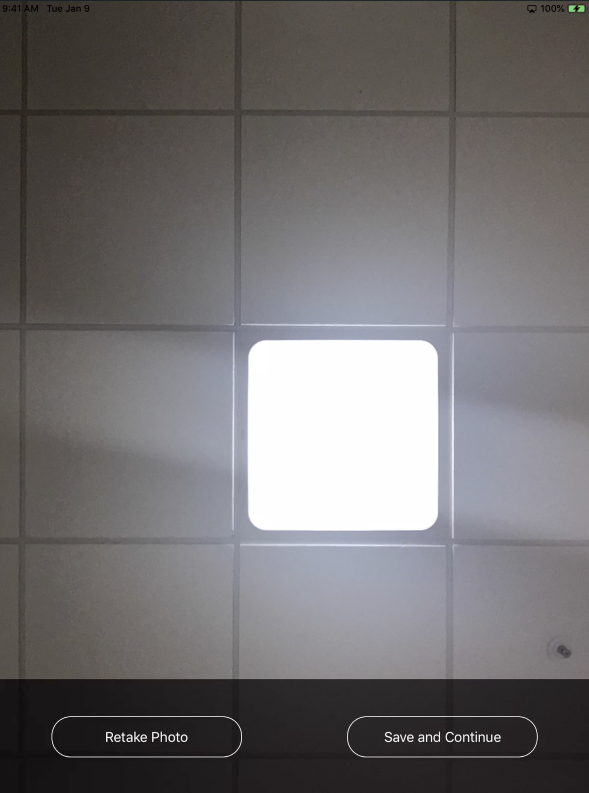

iOS Camera with a custom overlay and buttons using UIImagePickerController
NOTE: Apparently, Markdown sucks at numbering. I had to delete all the step numbering because of that and make them bullets instead.
Hey There!
I know it how much it sucks to make a custom camera controller in iOS (been there, done that). Without wasting much of the time in useless BS, I’ll start straight.
There are two different modules you can use, AVFoundation and UIImagePickerController.
Use AVFoundation if you want to customize your camera with editing, giving maximum flexibility to the user. If you want to have a simple camera screen that you want to add in your app, with custom controls on it and an overlay, here’s what you need to do.
What we’ll be doing is, make a camera overlay with the silhouette of a human face in the center, a capture button below it and will then display it for looking at how it went, i.e, if the user wants to retake or use the same photo.
-
Make a new project in xcode named whatever you want. I used
cameraOverlay
-
You’ll see your Project navigator in the following state 
-
Set up your developer profile in Xcode > Preferences > Account. I’ll skip this step.
-
You’ll need a device with a camera. I’ve used an iPad. For using camera, you need to get User’s permission for same. Add the following key-value pair in
info.plist. You can change value with whatever you want though.Key : Privacy - Camera Usage Description Value : Need camera to show how overlay is applied on the camera
You’ll see something like this in your info.plist after this step

- Change your launchscreen view (
Launchscreen.storyboard) so that you know you’ve entered your main storyboard (both of them are identical initially). I’ve added a tinge to it and a simple label on it.

- Add a button to your single screen in
Main.storyboard. I’ve labelled itCapture Something. This button will show us the actual camera with its overlay and capture button.

- Add its action to
ViewController.swiftso that you can configure its functionality.
 .
.
To add the action:
* Click on the button that you just added.
* Keep ‘option’ key pressed in your mac and click on ViewController.swift in the navigator to open it beside the storyboard.
* control-drag (by pressing control and then dragging the button) this button to your view controller.
* Add the action for this button named captureBtnWasPressed

Till this step, we’ve setup the basic the basic app. Let’s dive deep into our app’s functionality.
- Because we’ll be using
UIImagePickerController, add its protocol. A protocol is something described in this blog. I don’t really know how to explain that to you. Meh, I know it sucks. Anyway, add the following two protocols to yourViewController:
class ViewController: UIViewController, UIImagePickerControllerDelegate, UINavigationControllerDelegate{
}
- Add
UIImagePickerControllerto the class.
let myCamera = UIImagePickerController()
- Add camera’s
UIView, which will hold our overlay and the capture button on it. This will go on top of our camera’s live view. Also add aUIImagevariable that’ll hold our image when we’ll preview the captured image.
var cameraView: UIView!
var image: UIImage!
- In the action that we made in step 7, add the following code. I’ll explain it line-by-line.
@IBAction func captureBtnWasPressed(_ sender: Any) {
cameraView = UIView()
if UIImagePickerController.isSourceTypeAvailable(UIImagePickerController.SourceType.camera){
if UIImagePickerController.availableMediaTypes(for: UIImagePickerController.SourceType.camera) != nil{
// Use front camera and add overlay on it
myCamera.sourceType = .camera
myCamera.cameraDevice = .front
myCamera.delegate = self
myCamera.showsCameraControls = false
myCamera.cameraOverlayView = self.addOverlay()
self.present(myCamera, animated: false, completion: nil)
}
}else{
print("no camera device found")
}
}
- Look at it this way. When you press “Capture Something” in your app, the press will send an event that will execute this block of code because the button is bound with this
@IBAction. cameraView = UIView()instantiates the overlay view. This could be instantiated here, or right when we declared it in step 10.- The first if-condition checks if the camera is available. The second if-statement inside it will check if we can use camera (The app will ask permission to use the camera, step 4).
- In the second if-block, we add all the required properties for our camera system.
sourceType: Assigns the source toUIImagePickerController(other one being gallery for viewing images).cameraDevice: Front or back camera. I’ll use the front camera.delegate: That’s how the camera actually tells the app that some image has been captured. We won’t need to change this as we’ll use the native UIImagePicker delegate, which is inherited from the two protocols that we added in step (some steps back, idk Markdown sucks) Read more about delegates here.showCameraControls: Self explanatory, we don’t want the native controls as they will be shadowed by our overlay anyway.cameraOverlayView: This is the crux of this article. Hold tight. I’ll come back on this.self.present(...)shows the camera view on the main screen in the app, without any animation. The completion block holds what is to be done after we’re done showing the camera’s live view. We don’t need to do anything here as we’ll write separate function to handle that.
- Add the
addOverlayfunction in the view controller. This will hold everything that’s there about overlay and shit. The function takes nothing and returns a UIView, which is stored in the variablecameraView.
func addOverlay() -> UIView? {
self.addSilhouette(cameraView)
self.addCameraButton(cameraView)
self.addSkipButton(cameraView)
cameraView.frame = self.view.frame
cameraView.tag = 101
return cameraView
}
The function does the following tasks:
- Adds the silhouette of the face.
- Adds the camera button
- Adds a skip button to skip to the next screen.
- Assigns a tag to the UIView for so that we can delete it later when showing the preview of the image that we captured.
One of the most important lines here is the one that I left, as it wasted much of my time (and the only reason I am writing this blog!).
cameraView.frame = self.view.frame
This line of code makes our overlay’s UIView frame equal to our screen’s view frame. This is like making a parent for our overlay. If we don’t write this line, we can have all the buttons we want on our overlay, but they’ll be as good as images, won’t really do anything. After we add this line, the buttons will have a physical space in the view hierarchy.
- Let’s write the various components that are there in the overlay.
addSilhouette:
// Deg2Rad. Meh
func deg2rad(_ number: Double) -> CGFloat{
return CGFloat(number * Double.pi/180)
}
func addSilhouette(_ cameraView: UIView){
// The base canvas on which everything else is put
let path = UIBezierPath(roundedRect: CGRect(x: 0, y: 0, width: self.view.bounds.width, height: self.view.bounds.height), cornerRadius: 0)
// Semicircle for the silhouette
let semicircle = UIBezierPath(arcCenter: CGPoint(x: self.view.center.x, y: self.view.center.y), radius: 200.0, startAngle: deg2rad(0), endAngle: deg2rad(180), clockwise: false)
// Chin area of the silhouette
let freeform = UIBezierPath()
freeform.move(to: CGPoint(x: self.view.center.x - 200, y: self.view.center.y))
freeform.addCurve(to: CGPoint(x: self.view.center.x + 200, y: self.view.center.y), controlPoint1: CGPoint(x: self.view.center.x - 180, y: self.view.center.y + 450), controlPoint2: CGPoint(x: self.view.center.x + 180, y: self.view.center.y + 450))
path.append(semicircle)
path.append(freeform)
path.usesEvenOddFillRule = true
// Adding the canvas as a sublayer
let fillLayer = CAShapeLayer()
fillLayer.path = path.cgPath
fillLayer.fillRule = .evenOdd
fillLayer.opacity = 0.7
cameraView.layer.addSublayer(fillLayer)
}
I won’t explain everything in this snippet but we’ll look at it superficially.
- First of all, create a base canvas that’ll contain everything else that’s related to the silhouette.
- Then create a semicircle, for human head.
UIBezierPathis a cool topic, I won’t go in details but you can certainly have a look at this doc and this cool website that shows how they work. - Then we add the chin area of the face while keeping the constraints in mind.
Deg2Radis simply a function that converts the degrees to radians as the Apple API for BezierPath takes only Radians as input.- Finally, we append both the chin and head to the canvas and fill the layer with an opacity of 0.7.
You can change this function with whatever shape you want to use. Using a silhouette was relatively easier for me to use two different shapes, one being a semicircle, other being a random shape that’ll eventually make sense.
-
Before going to the next step, download the camera button from icons8 and drag it to
Assets.xcassetsfrom your downloads.
-
addCameraButton:
func addCameraButton(_ cameraView: UIView){
let button = UIButton(type: .custom)
button.setImage(UIImage(named: "camera"), for: .normal)
button.isUserInteractionEnabled = true
button.frame = CGRect(x: self.view.center.x-45, y: self.view.center.y + 355, width: 90, height: 90)
button.addTarget(target: self, action: #selector(self.didPressShootButton), for: .touchUpInside)
cameraView.addSubview(button)
}
- This function adds a camera capture button below the face silhouette.
- Makes a new
UIButtonvariable and sets its image as the one imported in step 14. - Sets the frame for the button, so that the area under it becomes clickable.
- The following line adds a target that is to be executed when the button is pressed.
- When you touch up inside (i.e, press the button), it’ll execute our
didPressShootButtonwhich we’ll write in the next step. - Doc explains better than I can about whatever the heck is this function.
- When you touch up inside (i.e, press the button), it’ll execute our
button.addTarget(target: self, action: #selector(self.didPressShootButton), for: .touchUpInside)
- Add
didPressShootButtonthat gets executed as the user clicks on the camera button on our overlay.
@IBAction func didPressShootButton(){
myCamera.takePicture()
}
- This function will click a picture. After taking the picture, our controller will inform the protocol method
imagePickerController(this gets called when the user clicks the camera button) and it will get executed. This function handles the preview of our image that just got captured with two buttons on it, retake or use the photo.
// Capture the image and show it on PreviewImageViewController
func imagePickerController(_ picker: UIImagePickerController, didFinishPickingMediaWithInfo info: [UIImagePickerController.InfoKey : Any]) {
myCamera.dismiss(animated: false, completion: {
// Remove the camera
for each in self.view.subviews{
if each.tag == 101{
each.removeFromSuperview()
}
}
// Add the preview
let view: UIImageView = UIImageView()
view.image = info[.originalImage] as? UIImage
self.image = view.image
// Add retake button
let button: UIButton = UIButton(type: .custom)
button.setTitle("Retake Photo", for: .normal)
button.frame = CGRect(x: self.view.frame.minX + 70, y: self.view.frame.maxY - 101, width: 246, height: 53)
button.layer.cornerRadius = 25
button.layer.borderWidth = 1
button.layer.borderColor = UIColor.white.cgColor
button.addTarget(self, action: #selector(self.captureBtnWasPressed), for: .touchUpInside)
// Add use photo button
let qbutton: UIButton = UIButton(type: .custom)
qbutton.setTitle("Save and Continue", for: .normal)
qbutton.frame = CGRect(x: self.view.frame.maxX - 316, y: self.view.frame.maxY - 101, width: 246, height: 53)
qbutton.layer.cornerRadius = 25
qbutton.layer.borderWidth = 1
qbutton.layer.borderColor = UIColor.white.cgColor
qbutton.addTarget(self, action: #selector(self.usedPhoto), for: .touchUpInside)
// The base of transparent view
let path = UIBezierPath(roundedRect: CGRect(x: 0, y: self.view.frame.maxY - 149, width: self.view.bounds.width, height: 149), cornerRadius: 0)
path.usesEvenOddFillRule = false
// Adding the canvas as a sublayer
let fillLayer = CAShapeLayer()
fillLayer.path = path.cgPath
fillLayer.fillRule = .evenOdd
fillLayer.opacity = 0.7
// Add everything
self.view.addSubview(view)
self.view.addSubview(button)
self.view.addSubview(qbutton)
view.layer.addSublayer(fillLayer)
view.frame = self.view.frame
})
}
-
First, we remove the camera view from the view hierarchy that we had applied on our camera object. This is done with the help of tag that we assigned earlier in step * Do let me know if you have a better way of removing that view.
-
Next, we add a
UIImageViewto the screen and then display the image that we just captured.info[.originalImage]contains the image that has been captured. -
Then we add the skip button.
addSkipButton:
func addSkipButton(_ cameraView: UIView){
let skipButton = UIButton(type: .custom)
skipButton.setTitle("Skip", for: .normal)
skipButton.isUserInteractionEnabled = true
skipButton.frame = CGRect(x: self.view.frame.minX, y: self.view.frame.maxY - 50, width: 70, height: 50)
skipButton.addTarget(self, action: #selector(self.imagePickerControllerDidCancel), for: .touchUpInside)
cameraView.addSubview(skipButton)
}
-
Same as camera button, except it has a different action that gets executed when we press it. Basically, it’ll take us to the same screen that comes after we’ve captured (and used) an image instead of clicking it. Note that it’s action is a protocol function that we’ve implemented for our own use. This comes directly as part of the black box that we have, named
UIImagePickerController:) -
Implement the delegate function that helps us to do something if the user doesn’t click an image at all.
// Used to skip the taking picture step when the camera is open
func imagePickerControllerDidCancel(_ picker: UIImagePickerController) {
myCamera.dismiss(animated: false, completion: {
self.performSegue(withIdentifier: "nextPageSegue", sender: nil)
})
}
Adds the functionality of performing a segue (redirection to the next screen pointed by the segue from the current segue), without any animation, after we’ve dismissed the camera by pressing the skip button.
- Finally, implement the function that sends you to next screen if you click on ‘Use Photo’
@IBAction func usedPhoto(){
self.performSegue(withIdentifier: "nextPageSegue", sender: nil)
}
And now we’re done!
That’s how our camera looks!

If you click on that camera icon, you’ll see a preview of what you captured

You can find the complete project here.